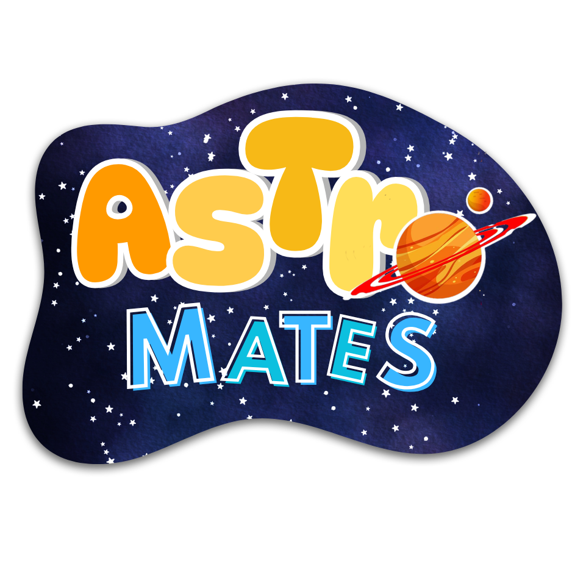

PERSPECTIVA ACADÉMICA CERCANA
Plataforma impulsada por la visión de una estudiante orientada a acompañar a la comunidad educativa. Ofrecemos un entorno de apoyo donde resolver dudas conceptuales y reforzar la confianza analítica.

AstroMates es una iniciativa académica concebida para transformar el aprendizaje de la física y las matemáticas en una experiencia accesible, rigurosa e interactiva. Nuestra misión es tender un puente entre los fundamentos teóricos y la comprensión intuitiva, permitiendo a los estudiantes desarrollar herramientas analíticas sólidas para interpretar los fenómenos del universo.
Plataforma impulsada por la visión de una estudiante orientada a acompañar a la comunidad educativa. Ofrecemos un entorno de apoyo donde resolver dudas conceptuales y reforzar la confianza analítica.
Abordamos de manera estructurada desde los conjuntos numéricos fundamentales hasta el cálculo diferencial e integral, facilitando la asimilación gradual de conceptos complejos.
Aspiramos a consolidar las bases conceptuales que hayan quedado rezagadas y a promover la curiosidad científica mediante explicaciones claras, sustituyendo la memorización mecánica por el descubrimiento.
Consolidación de bases conceptuales e interpretación analítica de principios matemáticos.
Experimentación práctica a través de recursos e iteraciones interactivas.
Comprensión integral del lenguaje formal que describe el funcionamiento del cosmos.